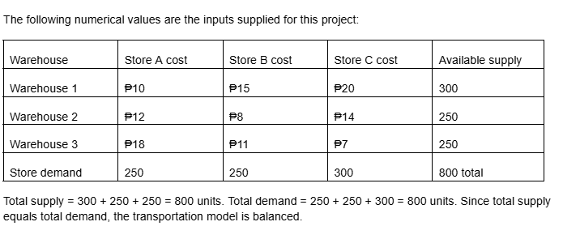
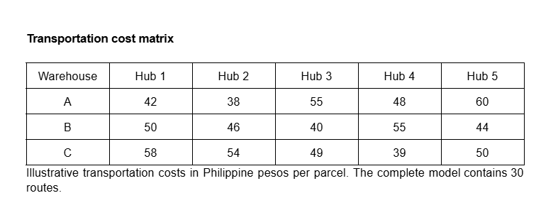
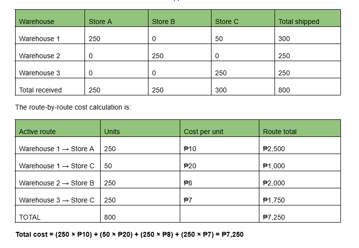
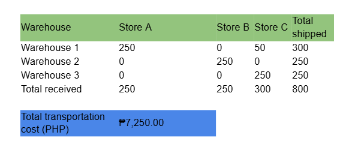

Transportation cost optimization in shopee express
It involves analyzing transportation costs, supply availability, and destination demands to identify the optimal allocation of shipments while minimizing total transportation expenses without exceeding available supply or failing to meet demand.
The problem
Inefficient allocation of shipments can increase transportation expenses. The analysis evaluates the per-unit transportation cost for each warehouse-to-store route, the available supply at each warehouse, and the demand at each store. Excel is used to organize the model and calculate its objective value, while Solver is used to search for the least-cost shipment quantities.
The data

- Available product supply from different warehouses.
- Product demand from various retail store.
- Transportation costs per unit from each warehouses to each destination.
- Total transportation budget.
My process
Step 1: Data Preparation in Microsoft Excel
The route costs were entered into a 3-by-3 cost matrix. Warehouse supply limits were entered in a separate column, and store demand values were entered in a bottom row. A second 3-by-3 table was created for shipment quantities. These shipment cells are the decision variables that Solver is allowed to change.
Step 2: Transportation model development
Tool: Microsoft Excel
- Created a transportation cost matrix showing the cost per parcel for each warehouse-to-destination route.
- Identified the decision variables representing the number of parcels assigned to each route.
- Established the objective function to minimize total transportation costs.
- Set constraints based on warehouse supply and delivery hub demand.
What this accomplished:

Developed a Linear Programming transportation model that represents the parcel distribution problem and establishes the conditions needed to achieve the lowest transportation cost.
Step 3: Optimized Allocation and Cost Calculation using Excel Solver
The minimum-cost allocation calculated from the supplied matrix is:

Step 4: Result Validation and Visualization
The shipment totals were checked against each warehouse's supply and each store's demand. Warehouse 1 ships 300 units, Warehouse 2 ships 250 units, and Warehouse 3 ships 250 units. Store A receives 250 units, Store B receives 250 units, and Store C receives 300 units. No warehouse exceeds its available supply, and all store demands are met.
Key findings
- Warehouse 1 supplies Store A with 250 units and Store C with 50 units.
- Warehouse 2 supplies Store B with 250 units.
- Warehouse 3 supplies Store C with 250 units.
- All 800 units of available supply are allocated, and all 800 units of demand are fulfilled.
- The calculated minimum transportation cost is ₱7,250 based on the provided cost matrix and constraints.
Results and Impact

Through the application of the The transportation model identifies a least-cost allocation with a total transportation cost of ₱7,250. The plan satisfies every store's demand without exceeding any warehouse's supply. The analysis demonstrates how Excel can organize the input data and calculate the objective function, while Solver can optimize the shipment quantities. The resulting allocation provides a numerical basis for distribution planning.